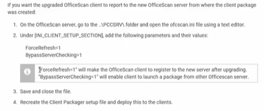

1) Stop the Master Service

2) Make a copy of this file below

3) Edit not the copy, but the original

4) Modify this and save

5) Da um start no serviço de novo

6) Construir um novo packet (informação adiciona)
7)Faça esse caminho e execute

8)


Clique em Create

9) Copia esse arquivo

10) Cola aqui

11) Ele foi pra outro Pc?? (agora executa)

12) Da para verificar se deu certo, ou seja, se está em um novo server